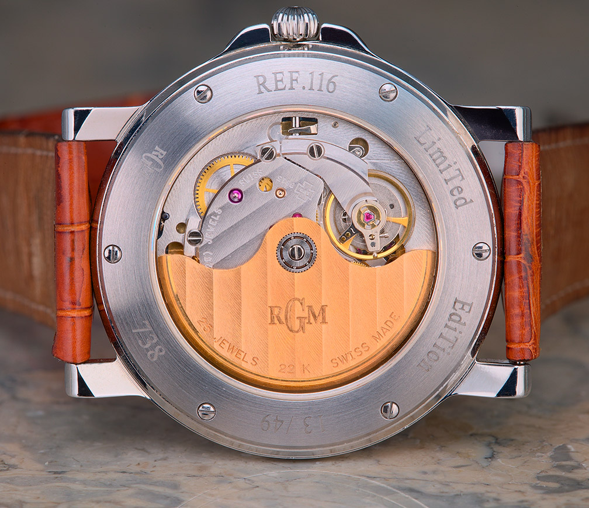
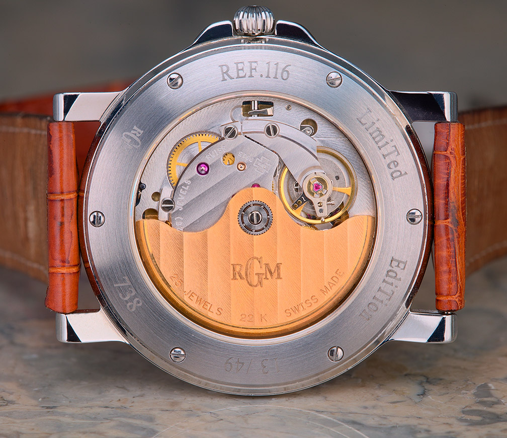
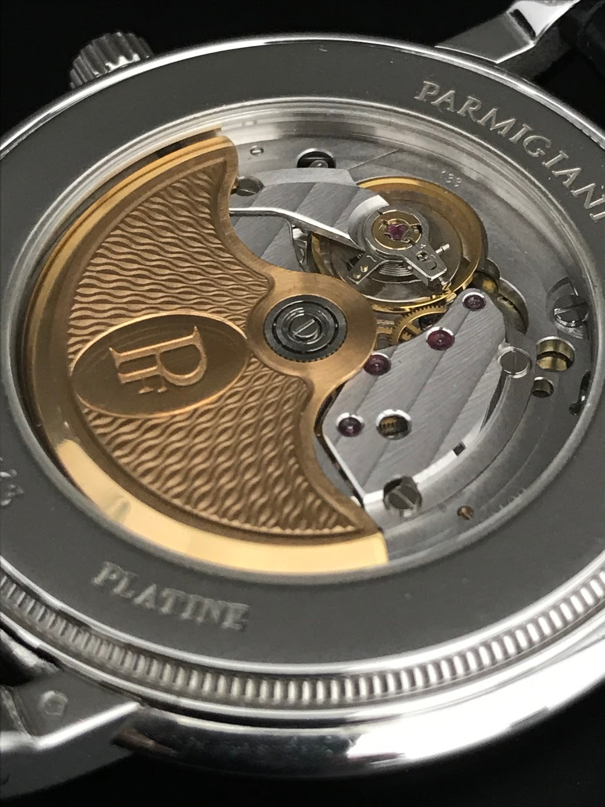
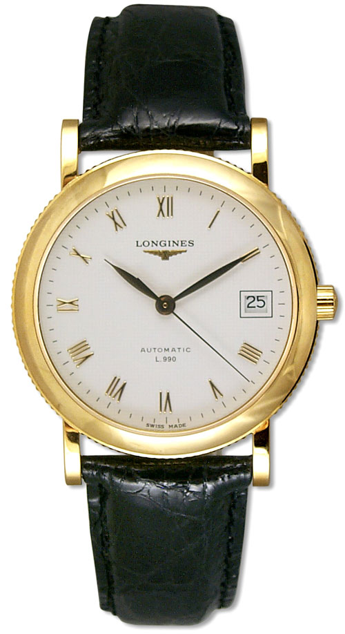
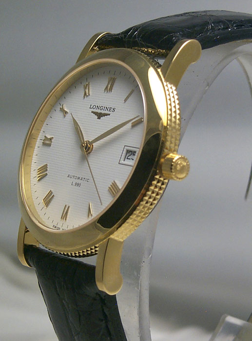
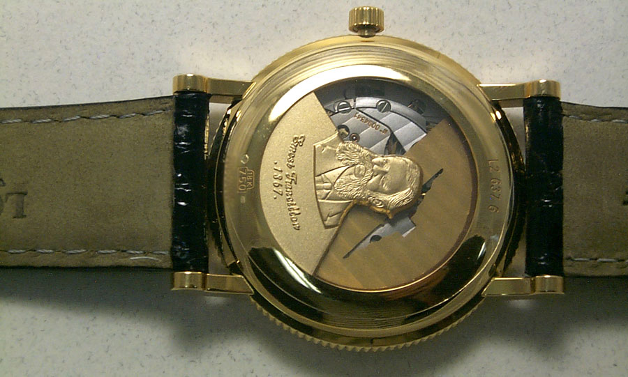

- 탄생
- 비운의 역사
- 잠시나마 집으로 돌아온 L990
L990은 1977년 탄생합니다. L890이라는 듀얼배럴을 가진 무브먼트를 전신으로 하고 있습니다. L890의 겹쳐져 있던 두 배럴을 한 플레이트에 나란히 배열하며 Ultra-Slim L990으로 탄생하게 됩니다.
1) L990이 탄생하고 얼마 후 쿼츠파동이라는 위기가 스위스 시계산업에 들이닥칩니다. 수많은 회사가 문을 닫았고 론진도 이러한 파동을 피해갈 수 없었습니다. 결국 론진은 심혈을 기울여 설계한 L990을 에보슈 전문기업 Nouvelle Lemania에 눈물을 머금고 팔게됩니다. 이후 L990은 Lemania 8810/8815라 불리게 됩니다.
2) 르마니아의 인수 이후 Lemania 8810/8815는 UnlysseNardin, Roger Dubuis, Parmigiani, RGM과 같은 한 가닥 하는 브랜드에 장착되어 명맥을 이어갑니다.
 




3) 이후 르마니아가 스와치그룹에 인수되며 현재의 Breguet를 만나게 됩니다. 지금 르마니아는 곧 브레게입니다. L990 혹은 Lemania 8810/8815는 이제 Breguet 591이라는 새 이름을 얻습니다. 이후에도 실리콘 밸런스와 탈진기를 장착하고 프리스프렁 방식으로의 수정을 거치며 현재까지도 현역으로 뛰고 있습니다. 7787, 8787, 9067 등 브레게의 시계에서 수정된 L990을 느끼실 수 있습니다.


얇다는 장점이L990이 하이엔드급 브랜드에서 사용되는 이유일 것입니다.얇은 무브는 컴플리케이션을 얹고도 시계를 얇게 할 수 있기에 좋은 선택지일 것입니다.브레게의7787 역시 파워리저브 인디케이터,문페이즈 등을 얹고10.2mm의 두께를 선보일 수 있었습니다(더 줄일 수 있지 않을까 하는 생각을 해봅니다).
Nouvelle Lemania의 스와치그룹 합류 이후 L990을 론진이 다시 사용할 수 있는 기회를 갖게 되었습니다. 물론 지속적인 사용이 아닌 한정판에 제한되지만요….
1) 2001년 론진의 30,000,000번째 시계를 기념하기 위해 990개의 한정판을 발매하게 됩니다. 이 모델에 장착된 무브가 바로 L990이고 990을 기념하며 990개의 한정수량으로 발매됩니다. 헌터백 스타일이 인상적이네요. 헌터백을 채용하고도 9.5mm의 두께로 선방하였습니다. L990의 얇은 장점이 빛을 발하는 순간입니다.


2) 2008년에도 Heritage L990이라는 이름으로 1000피스의 한정판이 발매됩니다. 39mm 사이즈의 칼라트라바 스타일 드레스워치로 디자인 되었습니다. 35mm버전도 존재합니다. 두께는 9mm로 초박형무브를 탑재한 타임온리 시계치고 생각보다 두껍습니다.


3) Ernest Francillon을 기리기 위한 한정판 역시 출시됩니다. Ernest Francillon은 론진의 창립자 Auguste Agassiz의 조카로 론진의 기반을 닦은 인물입니다. 당시 시계업계는 분업과 협업의 산업이었습니다. 론진 역시 이러한 방식으로 시계를 제작해왔습니다. Ernest Francillon은 론진을 이어받으며 하나의 공장에서 모든 공정을 이루어지는 시스템을 구축합니다. 즉, 매뉴펙쳐의 시작이었던 것입니다. 이러한 전략은 성공적이었고 론진이 오메가를 넘보는 거대한 기업으로 성장하는 주춧돌이 됩니다. Auguste Agassiz가 태조 이성계였다면 Francillon은 세종 이도인 것이죠…ㅎㅎ 그를 기리기 위한 Ref. L26376112 에도 L990이 장착됩니다. 8mm의 두께로 얇은 무브의 힘이 드러납니다. 출시연도는 제가 찾지 못했습니다.

이렇게 굵직굵직한 한정판들에L990이 장착되는 것을 보면 론진에서도L990을 자랑스러운 자신의 역사로 생각하는 것 같습니다.무브먼트를 기리기 위한 한정판이 론진에서 유일한 경우이지 않나 싶습니다.이렇게 자랑스러운 역사를 마음껏 누리지 못하고 한정판으로나마 겨우 선보이는 것을 보면 안쓰럽기까지 합니다.결론은…..나도 하나 만들어줘…..
[사진출처: Hodinkee외 Google 이미지검색....]
쓰다보니 너무 길어져 두 편으로 진행하겠습니다. 다음 편에는 L990의 구조적 특징에 대해 다루어보도록 하겠습니다. 긴 글 읽어주셔서 감사합니다!